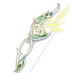
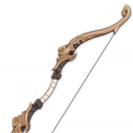
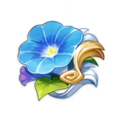

Тигнари

Тигнари - 5-звездочный герой стихии Дендро, который сражается с помощью лука.
Билд "Основной урон Дендро"
Оружие
Охотничья тропа
Дает бонус 12/15/18/21/24% к урону от всех стихий. После попадания по противнику заряженной атакой вы получаете эффект "Непрестанная охота", который увеличивает урон от заряженной атаки на 160/200/240/280/320% от мастерства стихий. Эффект исчезнет после 12 заряженных атак или 10 секунд. Каждые 12 секунд можно получить только 1 эффект.
или
Рогатка
Если обычная атака или прицельный выстрел поразили цель в течение 0,3 секунд после выстрела, урон увеличивается на 36/42/48/54/60%; в противном случае урон уменьшается на 10%.
Артефакты
Странствующий ансамбль
(2) +80 к мастерству стихий.
(4) Увеличивает урон от заряженной атаки на 35%, если персонаж использует Катализатор или Лук.
Рекомендуемые характеристики артефактов
Основные

Атака / Мастерство стихий

Урон Дендро

Шанс критического попадания / Урон
Второстепенные
- 1.Шанс критического попадания / Урон
- 2.Мастерство стихий
- 3.Атака%
- 4.Восстановление энергии